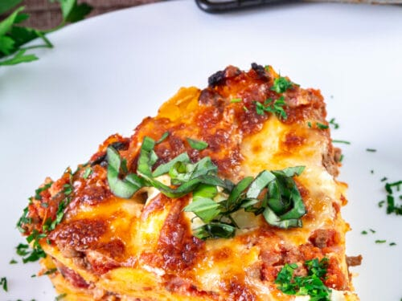

Lasagna

Description:
Lasagna, also known as lasagne, is a type of pasta, possibly one of the oldest types, made in very wide, flat sheets. The same-named Italian dish is made of stacked layers of lasagna alternating with fillings such as ragù, béchamel sauce, vegetables, cheeses, and seasonings and spices.
Indgedients:
- Lasagna noodles
- Ground beef
- Mozzarella cheese
Preparation:
- Preheat your oven to the temperature specified in your recipe, typically around 375°F (190°C).
- Cook the lasagna noodles according to the package instructions until they are al dente. Drain them and set aside.
- In a skillet, cook the ground beef or Italian sausage over medium heat until browned. Add chopped onions and minced garlic, cooking until they are softened and fragrant.